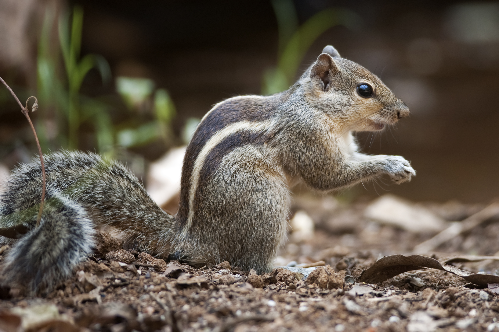

Slender lorises

Dusky Palm Squirrel
Pangolin

Sri-Lankan Jungle Fowl

Sri-Lankan Magpie
Asian Palm Civet

We have a wide range of creatures given to us by nature. Our tiny nation is home to a wide variety of creatures. There are endemic species among them. Back then, humans solely went animal hunting for food. They didn't endanger the existence of the species; they only slaughtered enough animals to meet their needs. There has always been a natural equilibrium between people, wildlife, and the surrounding environment in Sri Lanka. However, after the British arrived, animals were murdered for their precious horns, tusks, and skins in addition to being slain for amusement. When they realised there would be money to be made, a few locals started hunting. However, the population, or total number of people, has been rising significantly. For land and timber, they have thus cleared the forest. Our nation's creatures have already been deprived of their native habitat. The quantity of creatures residing in our forest has drastically decreased over time. Only a few animals remained in areas where there had formerly been hundreds, and finally governments formed national parks where hunting and killing of animals is prohibited. To save animals, governments have enacted strict legislation. Elephants are currently the most endangered species in our nation. In our jungles, there are only roughly 3000 elephants. Numerous factors lead to the death of elephants. To defend their agricultural grounds, farmers murder them. For the tusk, hunters kill them. Other animals are also killed by hunters for skin and teeth. It is evident today that the government established a distinct ministry dedicated to protecting wild animals. Numerous public awareness campaigns are carried out. People are instructed about the value of wild creatures. Here, are some animals in Sri-Lanka;